点（・）を使えば縦横平面的に考えることが簡単にできる
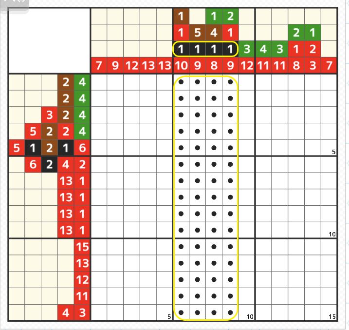
- 基本的に点（・）はその色が塗られる可能性があるマスにつける
これによって今まで横の1行だけ、または縦の1列だけで計算をしていたところが縦横の組み合わせで視覚的にわかりやすく考えることが可能になる。 -
カラーのステージ1は本来点を使うまでもないが、一度クリアしている人も点の使い方を理解するために 「再プレイ」でこの説明の順序で塗っていくことをオススメします。
まずは難しく考えずに黒の入る可能性がある列（6～9列目の黄色線部分）に全て黒の点をつけよう
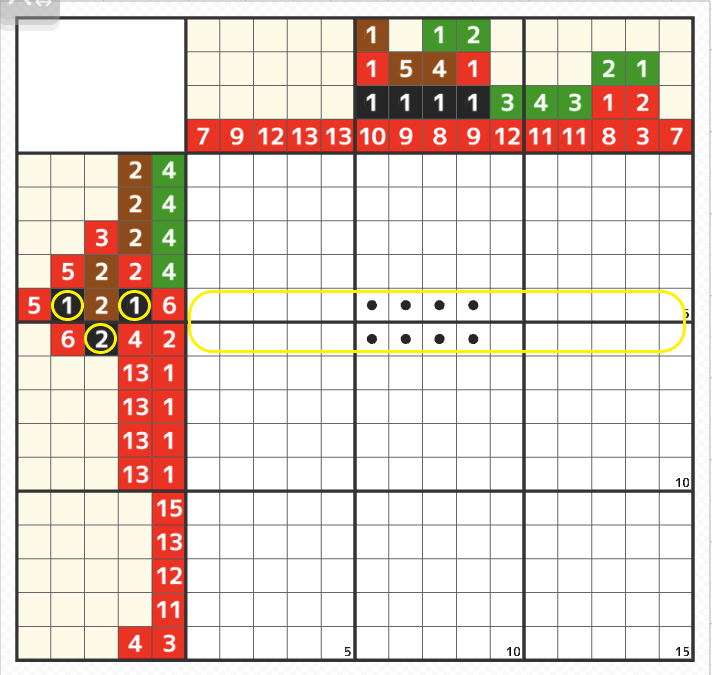
- 続いて左側のヒントで黒がある5～6行目以外（黄色線範囲以外）は黒が塗られる可能性はないので点を消す
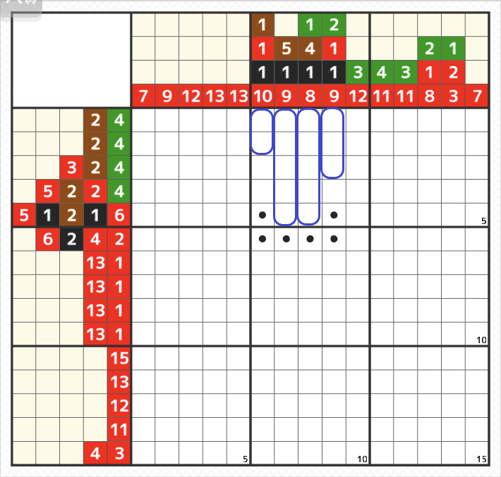
- 次に上側のヒントの黒より上の数字で黒以外の合計数の場所（青線部分）は黒が入らないので点を消す（8列目は全て一番上に詰めて塗ったとしても1マス目は緑、2～5マス目は茶色となる
よって5-7と5-8の点は消すことができる。
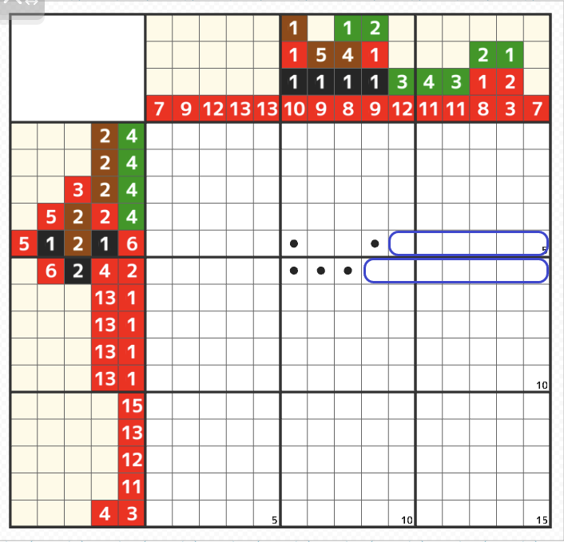
- 次は右から同じように右に詰めると黒以外の色の合計分は黒が塗られないので点を消すことができる
5行目は赤が6マス、6行目は赤4マス+空白（最低1マス）+赤2マス＝7マスは黒以外になるので6-9の点を消すことができる
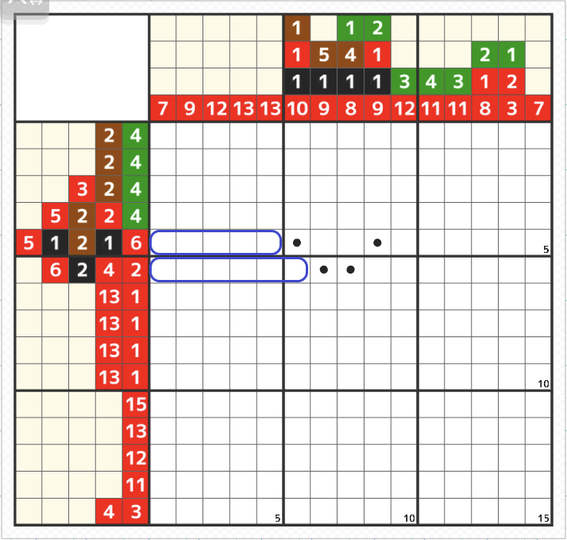
- 次は6行目に左から詰めると赤が6マスで黒が入らないので6-6の点を消すことができる
これで点の４箇所を黒で塗れる
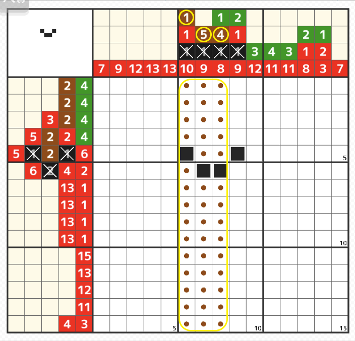
- 次に茶色が6～8列目にあるので塗られていない箇所に茶色の点を黄色の線の範囲に塗る
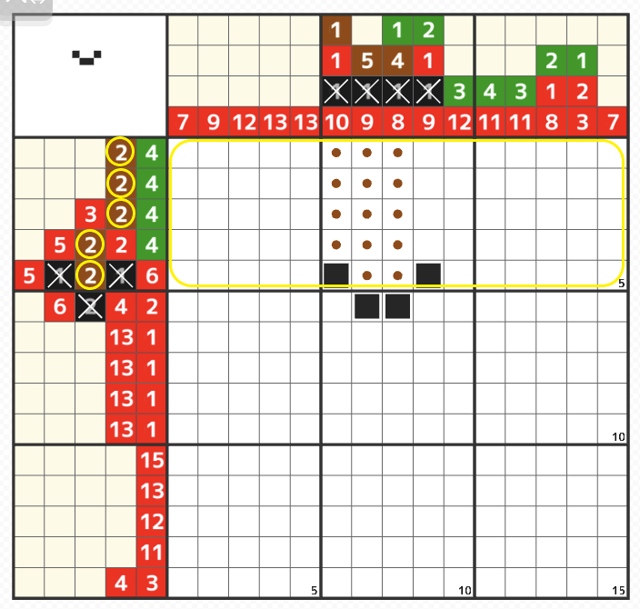
- 続いて左側のヒントで茶色がある1～5行目以外は茶色が塗られる可能性はないので点を消す
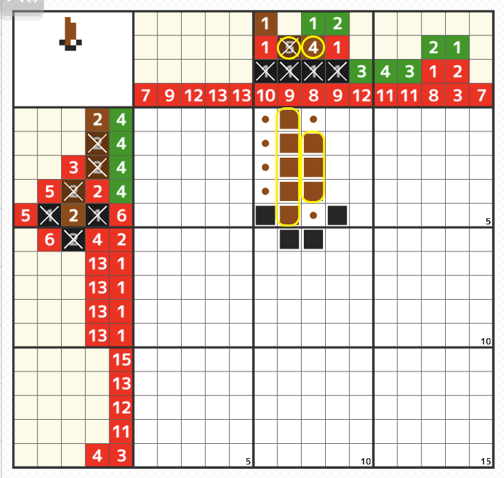
- 黒の点のときの様に上下左右の茶色以外の合計の点を消しても良いのだが点の範囲が狭いときは塗れる部分を塗っていく方が早い
7列目の5マスと8列目の4の内の間の3マス確定部分を塗る
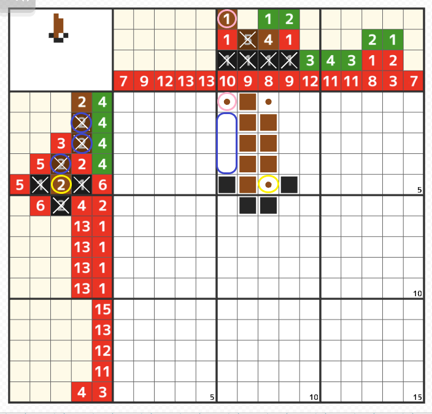
- 2～4行目の茶色のヒントに×が付いたので6列目の点は3ヵ所消える（青線部分）
それによって6列目の茶色の塗れる場所が点が1個になったことにより確定する（ピンク線部分）
また5行目の茶色ヒントの2は5-8のマスの点のところになる。（黄色線部分）
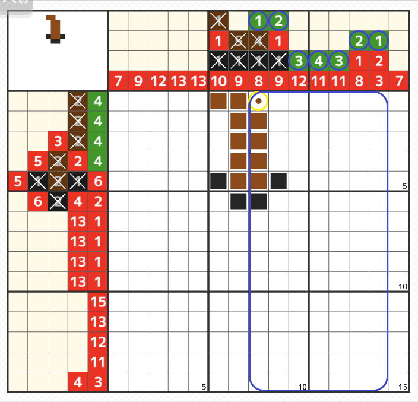
- 8行目の茶色は4マス塗れたので点を消す（黄線部分）
次に緑色が8～14列目にあるので塗られていない箇所に緑色の点を青線の範囲に塗る
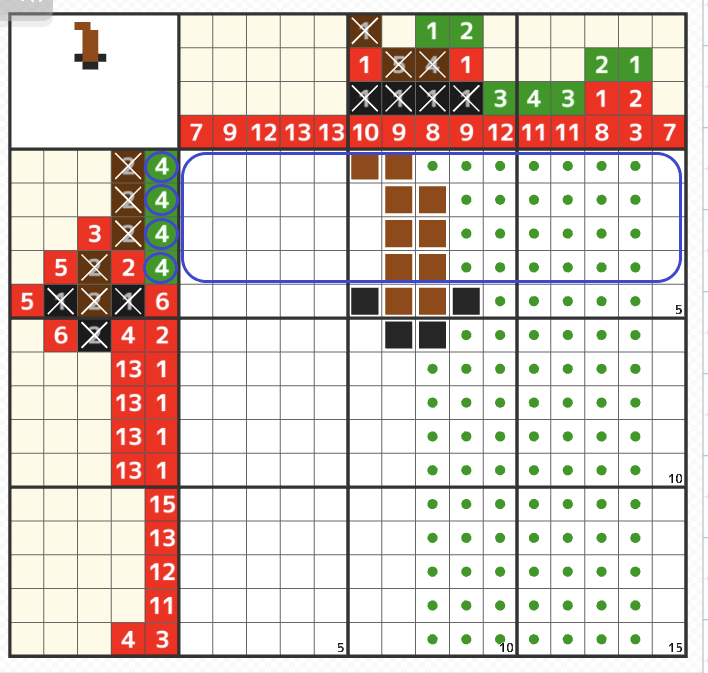
- 左側のヒントで緑色がある1～4行目以外は緑が塗られる可能性はないので点を消す
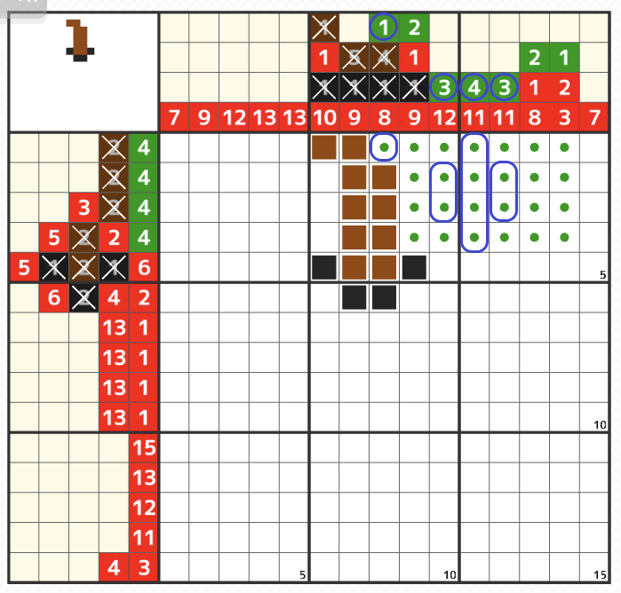
- 上側のヒントをもとにの8、10～12列目の緑色確定部分を塗る（青線部分）
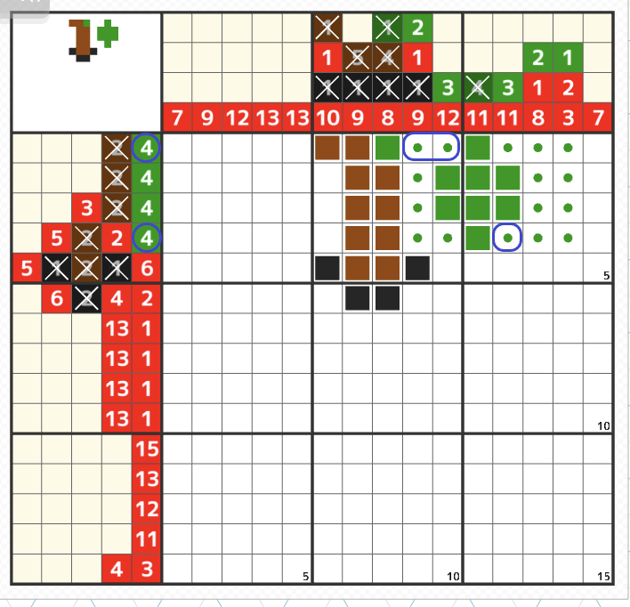
- 左側のヒントをもとに1，5行目の緑色確定部分を塗る（青線部分）
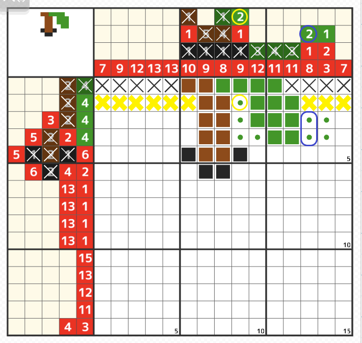
- 縦のヒントをもとに9列目（2-9）の緑色確定部分を塗る（黄線部分）
すると2行目の残りのマスに×が入るので13列目の2マスを塗ることができる。
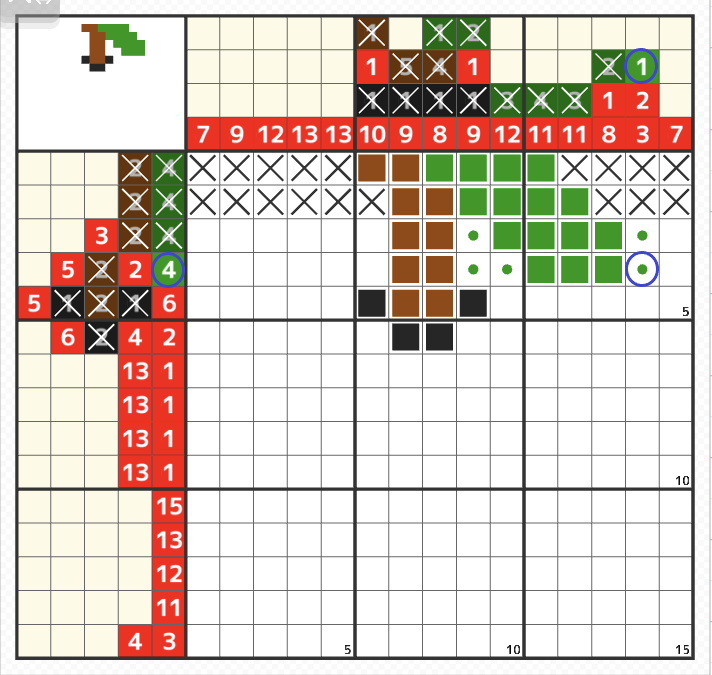
- ヒントが埋まって点の消せるところを消してもよいが、ここまでくると縦横残っている箇所がここしかないとわかるので4-14マスを塗る
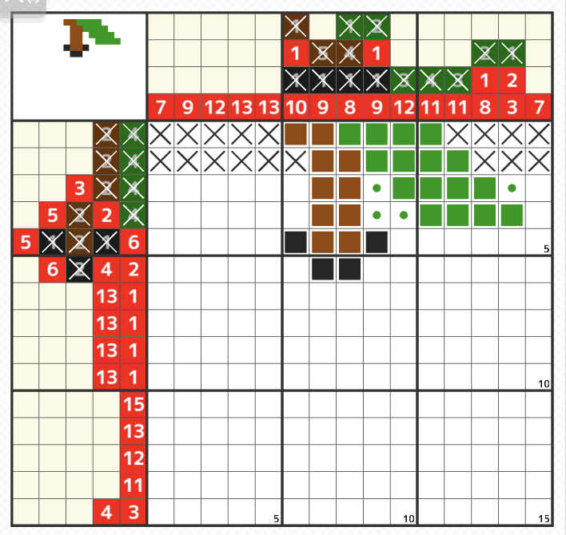